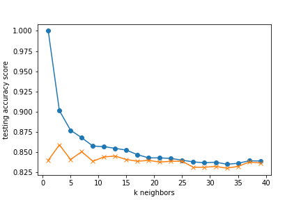

K Nearest Neighbors

Machine Learning Model - K Nearest Neighbor
The KNeighborsClassifier model tries to categorize data by assigning it to a data class
which is most similar to the data points nearest to it. The k value is manually selected
by the programmer to optimize the model and can vary depending on the data set used.
Typically, a larger k value will decrease the effects of noise, but the boundaries of
the classifications are not as distinct, so it is a balancing act when trying to determine
which is the best value to use.

The k values represent the number of neighbor values that are compared and a simple majority
of like type datapoints is used to classify the datapoint being reviewed.
For our models, the k values were selected by reviewing a matplotlib graph of the k values and training
accuracy scores and finding the lowest value where the data appears to stabilize.
Results :
0 = Fail
1 = Success

When categorizing the movie data into success/failure categories, the model had the
following accuracy scores:
k=17 Train Accuracy: 0.843
k=17 Test Accuracy: 0.840
This model has an 84% accuracy, but it under-predicts the success of the movie meaning it
predicts a fail when it actually has a score that indicates a successful movie.
This means that a movie fanatic may not watch a movie thinking it will be bad,
but may then miss out on watching something they would actually have enjoyed.

When trying to find which data points had more impact on the model categorizing into success/failure,
removing the columns that indicated that genre of movie improved the model and had the following
accuracy scores:
k=13 Train Accuracy: 0.879
k=13 Test Accuracy: 0.884

When categorizing the data into the integer rating scores from 2-9, the model had the
following accuracy scores:
k=23 Train Accuracy: 0.506
k=23 Test Accuracy: 0.456
This shows that the model is able to better categorize the data into two separate groups instead of
splitting the data into 8 separate groups.